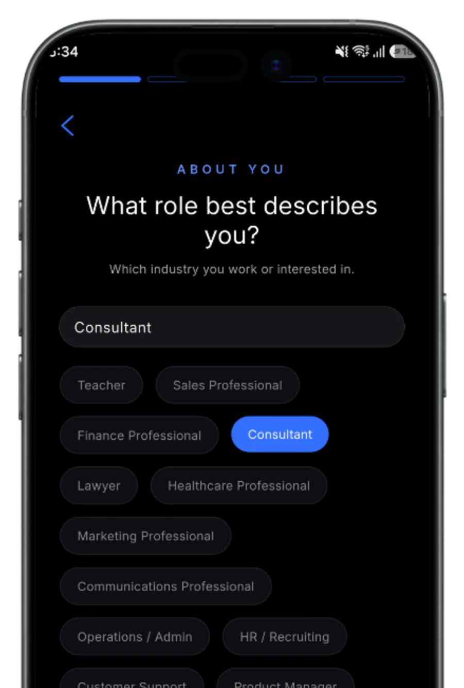
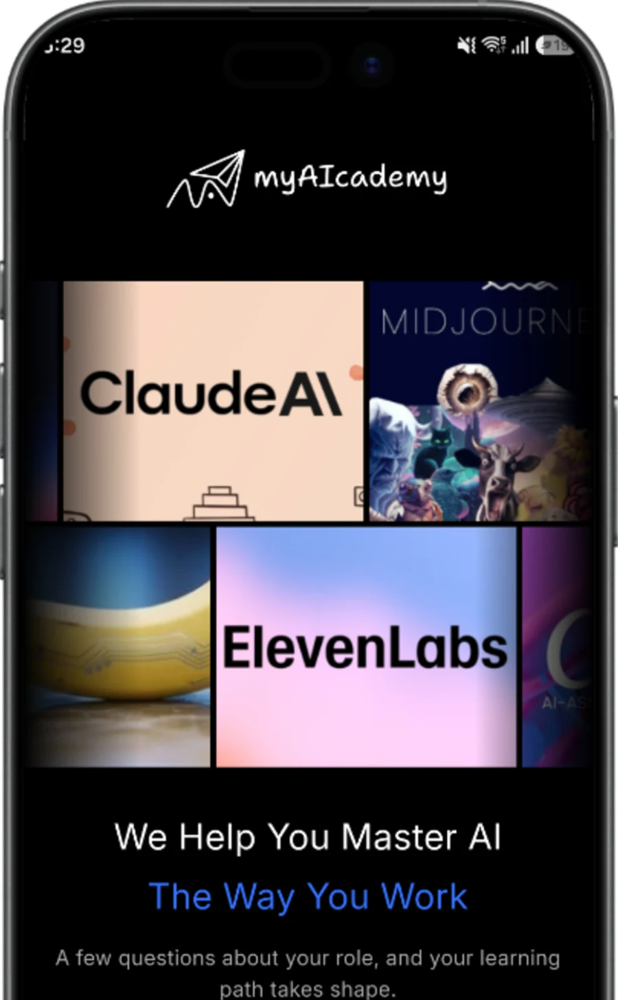
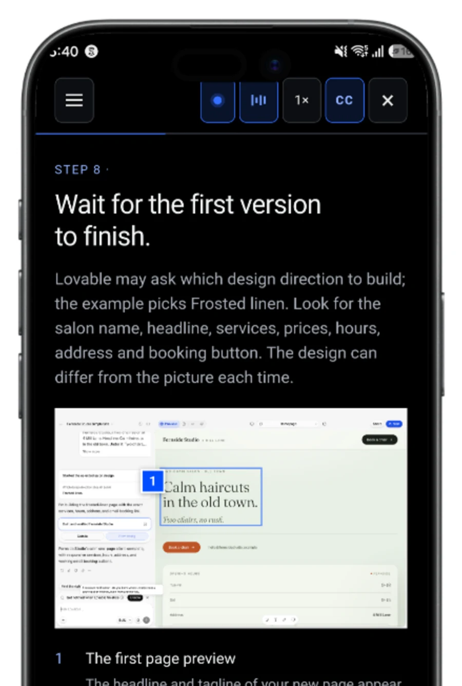
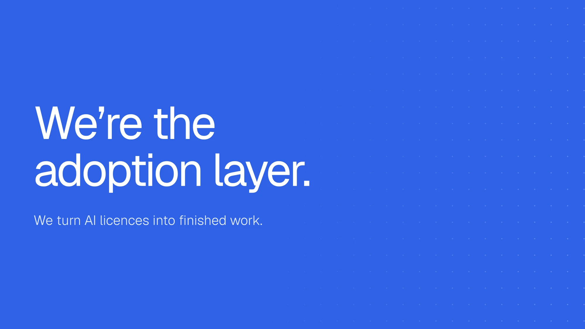
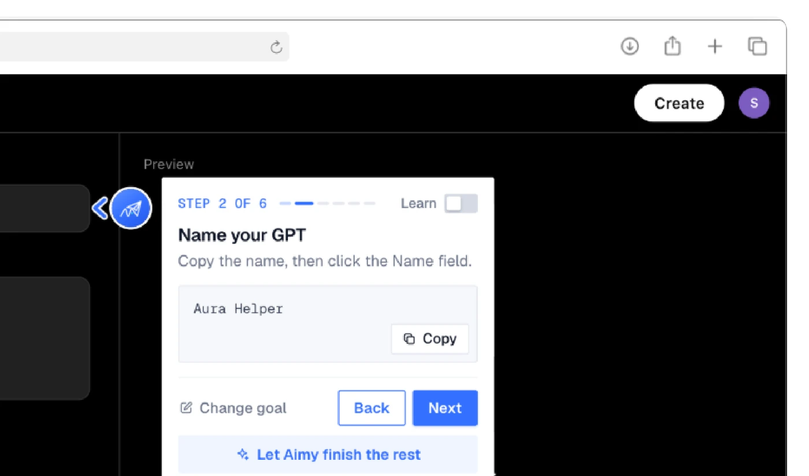

Bought for everyone.
Four in five see nothing back.
80%
of organisations report no earnings impact from AI, across 30 million Copilot seats. Microsoft and McKinsey, 2025.
How I designed myAIcademy, the app that teaches people AI inside their own job, and proves the work got done.
Follow the story


Four in five see nothing back.
80%
of organisations report no earnings impact from AI, across 30 million Copilot seats. Microsoft and McKinsey, 2025.
“How does my team use this in its actual work?”
Asked by more than 10,000 professionals trained in person. They knew the tool was there. Not what to do inside it.

Start with the job.
A few questions about your role shape the whole path.
Practise on real work.
Every lesson is a follow-along on the real tool.
Finish beside the tool.
Aimy walks you to done, inside ChatGPT.

The real onboarding asks this first.
Your first path
AI for consultants
Finish the path and it lands in your skill passport.
Real screens, and the mockups still to come.
Welcome
Onboarding
Lesson
Aimy, inside ChatGPT
Skill passport, mockup
Progress, mockup
Team dashboard, mockup
Path builder, mockup
10,000+professionals trained in person
72hto rebuild every path after a tool release

The whole product and the brand: research, flows, onboarding, the lesson player and Aimy, one design system across iOS, Android and web, and the site, decks and social around it. Prototyped in code with Claude Code, imagery with Higgsfield, lessons voiced with ElevenLabs.
Ashfaq Imran, Head of Product Design